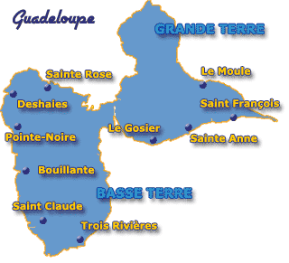
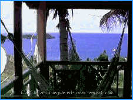
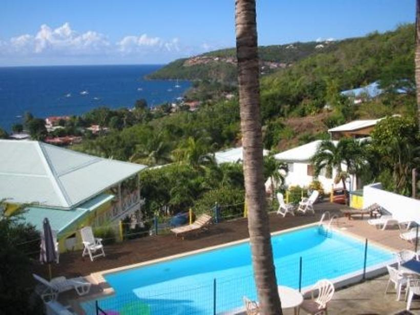
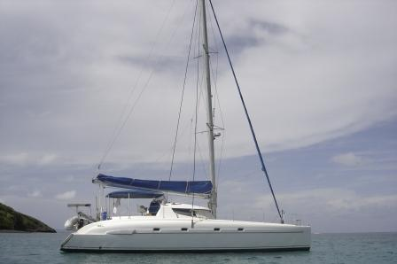
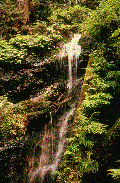

Morne TARARE - 97125 BOUILLANTE
Tél./Fax : 05 90 98 72 05 - Mobile : 06 90 40 63 48
GUADELOUPE
|
|
route - Nest Farm in tropical BOILING
The best answer to your search for accommodation in Bouillante!
You are determined to spend your family holiday in Guadeloupe and you are interested in forms of holiday rentals suitable and comfortable? Test offers accommodation in Guadeloupe boiled Tropical Nest! In a paradise to 40 meters with one of the most beautiful views of West Bay on Malendure Pigeon and islands, the famous Cousteau Reserve, Sylvie and Jean Pierre offer the most attractive offers of holiday rentals to the boil.

Accommodation Bouillante: The bus ride takes you to The Nest Tropical paradise!
Tropical nest, accommodation Bouillante, a distance of 45 to 50 minutes brings you to your holiday destination: From the airport, take the left lane to Basse-Terre. At 2nd roundabout take the N1 ring road on the right. Exit direction BOUILLANTE / POINTE-NOIRE THROUGH THE ROAD. At the roundabout, continue same direction. You go through the neck of teats and arriving on the Caribbean coast, turn left to boil. A 5 km, you pass the beach Malendure. 1 km further you take the road left before the station VITO. On top of the hill, left after the parking of the hotel you will find the bungalows and cottages of our cheap offers accommodation to the boil. An offer of holiday rentals in Bouillante inexpensive and enjoyable
Time 45 to 50 minutes.
The Nest Guadeloupe Tropical bungalows with swimming pool enjoys a privileged position in a perfectly maintained tropical park where you will find 2 stone barbecue for your grill. In this paradise decorated with a peace psicine approved and monitored by DADS monthly from 11.50 meters 5.50 meters you can relax in a superb carbet 150m ². Our offer of accommodation Bouillante: - 6 broken Creole bungalows with air conditioning option mobile - 4 fully equipped air-conditioned bungalows, - A superb apartment with a capacity of 6 to 9 people, our offer of holiday rentals in Bouillante includes a kitchen, TV, free WIFI access, private parking, terrace, and of course bathroom. A washing machine is available with-out costs of laundry and a € 2 coin is expected to extend your machine. Why opt for accommodation in boiling Tropical Nest? Sylvie and Jean Pierre, the owners of Tropical Nid guarantee rental services to holiday Bouillante high quality at competitive rates! Tropical Nest is also a base for visits to Guadeloupe - Basse Terre: Soufriere, the field of Coluche, the Col des Mamelles, carbet Falls, and many others. In addition, all shops, restaurants, doctors, pharmacists, are 300 meters from the nest. Vacation rentals in Bouillante: Regulation booking Settlement of your accommodation booking to boil, Guadeloupe: 30% deposit (payment by check or line CB) and the balance upon arrival. Accepted forms of payment: Checks, CB, species, care about your purchasing power Nest Tropical obtained approval ANCV checks.



View from the terrace of a conditioned view of the pool and if you love the sea, stroll quiet here, "LOUBINE" at your service

|
|
|
SCI LE NID TROPICAL - Hébergement gîte Bouillante Malendure
-
Location de Bungalows et de Gîtes pour Vacances en Guadeloupe. |
|